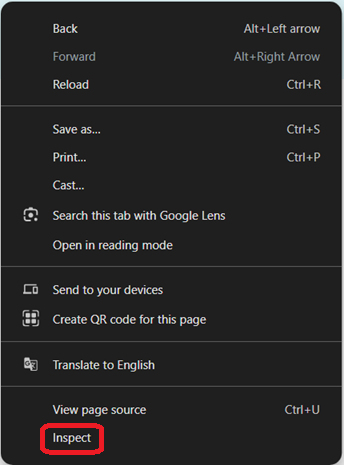

Profile
I am Vivien Tóth-Lisztóczki, a Hungarian online editor turned web developer with pedagogical qualifications and relevant soft skills.
I'm building my skills through hands-on projects and continuous learning.
About Me:
- detail oriented
- conscientious
- motivated
- highly precise
- ability to prioritize
- constructive attitude
Skills

Web development
- HTML
- CSS
- Bootstrap
- Visual Studio Code
- Canva
- JavaScript - in progress
I discovered web development out of curiosity, but it quickly grew into a genuine passion. Coming from a background in the humanities and online editing, I was surprised by how motivated I became to self-study programming.
Online Editing
- Content Writing & Editing
- SEO
- Premiere Pro
- Google Analytics
- Proofreading
- Content management
- Social media management
Online editing was a multifaceted job, that required constant concentration, self-development, learning and good cooperation skills.
Pedagogy
- Research skills
- Clear Communication
- Presentation skills
- Multitasking
- Lesson & project planning
- Problem-solving
- Empathy
I was a teacher trainee for a year and a half. During that time, I realized that this was not my path, but I gained a lot of experience and new knowledge.
My Journey
Studies
Full-Stack Developer
2026 March-
The App Brewery
(Online Course)
Content: HTML, CSS, Javascript, Node, React, PostgreSQL, Web3 and DApps.
Master's Degree
2016-2022
University of Miskolc
Teacher of English Language and Culture
Teacher of History and Civics
Experience
Online Editor
2022-2026 (2024-2026: Maternity leave)
Borsod Online
Wrote and edited articles, newsletters and creative contents.
Managed and supervised the layout of articles, advertisements and social media platforms.
Analysed data of Google Analytics and created reports.
Teacher Trainee
2020-2022
Taught History for high school students
Fényi Gyula Jesuit Grammar School.
Taught English and History for elementary school students
Bársony János Primary School.
Projects
My first project
This portfolio webpage is my first biggest project for which I wrote the code independently, separate from the course tasks.
Please look around. 😊


Course projects so far
Some examples for the section ending projects. In case of responsive websites, we had three projects, but my personal site covers most of it, thus I linked a media querie task. Check these out!
Coming next ✨
A webpage for the tried and tested recipes of my family.
(With a priority to continue the course curriculum.)
Contact
Get In Touch
You have made it this far. Maybe we should work together.
Currently accepting new quests
Open to:
Also open to other opportunities where I can grow as a developer.